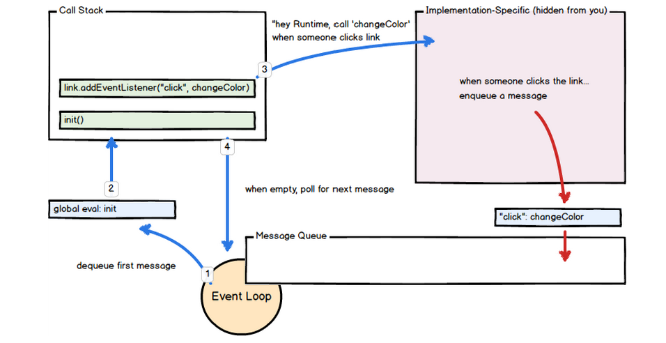

Event loop and message queue
Event-loop和Message Queue是js中实现callback的方法。比如:
function init(){
var link = document.getElementById("foo");
link.addEventListener("click",function changeColor(){
this.style.color = "black";
});
}
init();
这里执行init,然后init添加了一个callback函数。具体的执行流程如下图所示: 
Event loop首先执行init,然后init调用addEventListener,通知browser注册一个function handler。当用户点击link时，browser把一个message(包含事件，以及callback函数)放入js的Message Queue中。
当Event Loop执行完在stack中的function后，会去message queue取地一个message，然后继续这个循环。这里显然是有异步操作的，但是这和js是单线程的并不矛盾。因为当用户点击link，然后生成一个message并且放入message queue是browser完成的。和js的执行环境没有关系。js不过是browser和用户交互的一个脚本语言。browser中还有很多其他的部分。
优点:
- 在js中不需要并发的操作。使js简单。
- 在I/O bound的环境下表现的很好。但是在CPU-bound下表现不好。
HTML5: Unblock w/Web Workers
在HTML5中，添加了一个新的特性:workers.
- Additional thread of execution for offloading expensive operations
- Separate event loop, message queue,stack
- Communicate with main thread through messaging
- Supported by all modern browsers + IE10

可以看到js中能够建立一个有独立event loop,message queue,和stack的worker去执行一些function. 当执行完毕后通过message和main thread通信。